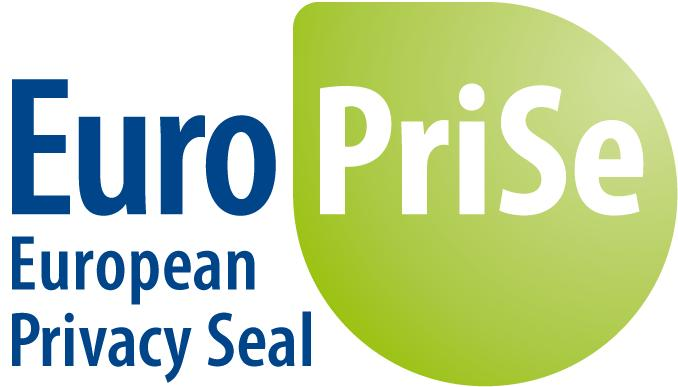

|  |
PRESS RELEASEEuropean Privacy Seal awarded to privacy-friendly search engines Ixquick, Startpage and Startingpage Certified by EuroPriSe in 2008 and 2009 meta-search engine provider Surfboard extends its certified offer meeting the high requirements of European Data Protection and makes tracking-free web search possible.Kiel/Zeist 9. February 2011 The European Privacy Seal was awarded today by EuroPriSe to Netherlands based Surfboard Holding B.V. for its meta-search platforms Ixquick.com, Startpage.com and Startingpage.com, which offer a privacy friendly way to search the Internet. 70 to 80% of the information on the Internet is found by using search engines. Searching for technical terms or your favourite pizza place - a search engine helps to find the right website. But it also reveals much personal information and leaves data tracks. By simply linking search terms users may be identified. This information can be used for profiling and to assess someone’s creditworthiness. Anyone who doesn’t want to be tracked while searching should use a privacy-friendly service such as Ixquick. Being the first company to be successfully certified in 2008 the Dutch company Surfboard Holding B.V. has renewed the EuroPriSe certificate for its meta-search engine Ixquick and added Startpage and Startingpage to the target of evaluation. The Ixquick service is branded in three domains (Ixquick.com, Startpage.com and Startingpage.com), using the same systems but a different look and feel. The EuroPriSe evaluated functionality is the meta-search engine, which combines multiple individual search engines into a weighted average, producing more relevant search results for web, images and videos. Startingpage uses Google search results only. All 3 search engines especially focus on protecting the privacy of its users. The service allows users to search the Internet for web pages, images and videos using multiple search engines. Furthermore a ‘proxy’ is provided to view the found web pages anonymously. The target of evaluation of the certified service consists of web search, images, videos, the proxy functionality, ixquick-cache, and interfaces to other search engines. Surfboard has successfully demonstrated compliance with the demanding European regulations on data protection and privacy and is awarded the European Privacy Seal EuroPriSe today. The EuroPriSe trust mark (www.european-privacy-seal.eu) is issued by an independent certification body to IT products and IT-based services after successful completion of a quality-backed procedure: an evaluation by accredited legal and technical experts is validated additionally by an independent and impartial certification body at the Unabhängiges Landeszentrum für Datenschutz (www.datenschutzzentrum.de). The Seal as well as the public reports summarising the evaluation results provide transparent guidance when choosing or privacy valuating an IT product or IT-based service. “We are delighted that Ixquick for the third time has decided to undergo an evaluation by independent experts and to further extent its certified services. Ixquick provides to its users what should really be a matter of course in the Internet but often falls by the wayside: transparency and data thriftiness.” Says Kirsten Bock, head of EuroPriSe at ULD. The Data Protection Commissioner of Schleswig-Holstein and head of ULD, Dr. Thilo Weichert: “For Ixquick users’ data protection and privacy are already built into the design of the service. Such a ”Privacy by Design” approach is exemplary and user friendly.” “The European Privacy Seal is very important to our users. Re-certification by EuroPriSe, is the ultimate proof to our users we continuously live up to our promises. If people search with Ixquick, Startpage or Startingpage, they get the best results - and full privacy." says Surfboard’s CEO, Robert E.G. Beens.
EuroPriSe
Surfboard Holding B.V. Contact: |